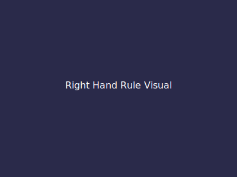

The Kinetic Drive: From Current to Motion
Current & Magnetic Fields
Electric current ($I$) is the flow of charge. A fundamental principle of physics is that moving charge creates a magnetic field. We determine the direction of this field using the Right-Hand Rule.

Conceptual DC Motor Operation
A DC motor converts electrical energy to mechanical energy using interacting magnetic fields.
- Current flows through the armature coil, turning it into an electromagnet.
- Magnetic fields interact: The armature's field pushes against the stator's permanent magnets (Like poles repel, Opposites attract).
- The Commutator flips the current direction every half-turn to keep the motor spinning in one direction.
Did You Know? (Back EMF)
As the motor spins, it generates a "back voltage" that opposes the battery current. This limits the top speed and prevents the motor from burning out!